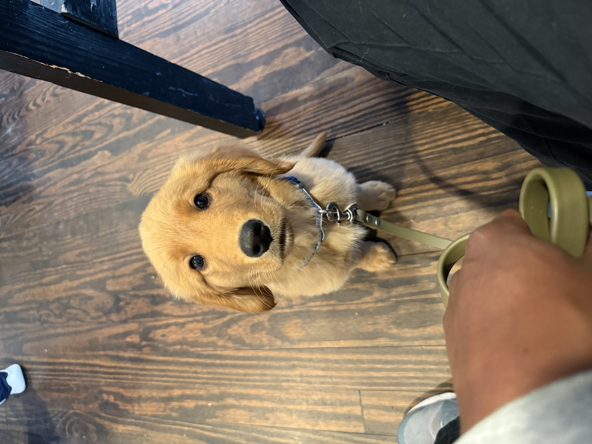

Clear communication
Use Yes, Good, and Free daily. Avoid extra talking during commands. Clean words build confidence because Charlie can predict exactly what works.

Crowned K9s Find My Puppy Academy
Your guide to living with Charlie: clear communication, calm greetings, crate rhythm, commands, and the structure that helps a sweet social butterfly make good choices.
Golden Retriever · Private family playbook

Lead with Confidence, Train with Crowned K9s.
Know your pup
Charlie does like to jump for attention. Be very strict here: if jumping works, it becomes stronger. For greetings, keep him on leash, step on the leash with enough slack for a comfortable stand or sit, and only let people give attention when all four paws are on the floor.
Your daily structure
When in doubt, take Charlie out. Puppies need predictable chances to get it right.
Bathroom -> short training -> eat -> bathroom -> nap or Inside -> bathroom -> play -> bathroom -> Place or calm time.
Inside means go into his crate. Use it for naps, safe breaks, and preventing tired puppy chaos. The crate is not punishment; it is where Charlie learns to shut off.
At his potty spot, say Hurry Up once (or as he starts to sniff). Stay neutral: no baby talk, no play - boring until he goes. The moment he finishes outside, mark Yes and pay big (treat, warm tone). Keep the phrase and the payoff consistent.
Communication
Charlie does best when the words stay clean and consistent. Say less, time it well, and make the consequence obvious.
Use Yes to mark the exact moment he gets it right, then reward. Example: his bottom hits the floor on Sit -> Yes -> food, praise, touch, or access.
Use Good to tell him to keep holding the behavior. This is useful for Stay, Place, Down, and calm greetings.
Free is his release word. After Sit, Down, Stay, Place, Wait, or Inside, he should wait for Free before getting up, bolting through a door, or diving at the food bowl - unless you are actively luring the next rep. Use Free through the day so the rule stays obvious.
Ant ant is his correction/interrupter. Say it once, then immediately help him make the right choice: leash prevents jumping, guide him back to Place, reset the doorway, or ask for a known command.
How he was taught
Charlie was not just taught words; he was taught a system. These concepts are the homework that keeps his training from fading once he is home.
Use Yes, Good, and Free daily. Avoid extra talking during commands. Clean words build confidence because Charlie can predict exactly what works.
Train step by step. If Charlie struggles, make the rep easier: less distance, less duration, fewer distractions. Win small, then build back up.
A rep counts when you release him with Free. If he self-releases from Sit, Down, Stay, Place, Wait, or Inside, reset calmly and make the next rep easier.
Charlie has been taught to check in with his handler. Reward eye contact, name response, and calm decision-making before food, doors, greetings, and play.
Use Wait at doors, gates, crate doors, and car doors. Charlie should not move through thresholds until he hears Free. This is impulse control and safety.
Be consistent around furniture, food, doorways, kitchens, and guest greetings. Mixed rules make social puppies pushy; clear rules make Charlie calmer.
What he knows
He knows these behaviors. Your job is to help him learn that your voice, timing, and house rules mean the same thing. Duration behaviors end with Free when you are finished holding the position.
Means
Look at me / check in.
Your practice
Say his name once. When he looks, mark with Yes and reward. His name should mean attention, not background noise.
Means
Bottom on the floor; a polite default for food, doors, and greetings.
Your practice
Ask for Sit before attention and meals. Do not pet him while he is jumping. If you are holding the sit, release with Free when you are done.
Means
Lie down and settle his body.
Your practice
Use short reps first. Mark with Yes, build duration with Good, then release with Free. Reward calm.
Means
Hold the position until you release with Free.
Your practice
Start close and short. If he breaks early, reset calmly and make the next rep easier.
Means
Go to his bed/mat and stay there until Free.
Your practice
Use Place during meals, guests, TV time, and whenever he needs an off switch.
Home life cues
Means
Go into his crate.
Your practice
Use it for naps, bedtime, and safe management. Keep the tone neutral and reward him for going in. When you are ready for him to come out calmly, release with Free (not a race out the door).
Means
Pause - do not move through the threshold or toward the food until Free.
Your practice
Use Wait at meals, exterior doors, gates, and car doors. This protects manners and safety.
Means
Potty outside - now.
Your practice
Say Hurry Up at his potty spot; stay boring until he goes, then Yes and a real payoff.
Means
Come to me.
Your practice
Use Ven when you can help him succeed. Reward generously when he comes in, especially away from people or distractions.
Means
Touch your hand.
Your practice
Present your hand clearly, say Vamos, then mark and reward the nose touch. This is useful for movement, redirection, and getting him back with you.
Means
At night, relax again and settle back down.
Your practice
Keep it boring and consistent. Say Go to sleep, reduce attention, and give him the chance to settle instead of turning nighttime into playtime.
Calm greetings
Before Charlie greets people, leash him and step on the leash so he can stand or sit comfortably but cannot jump up. When he is calm, people can pet him. If he pops up, attention stops.
Ask guests not to hype him up, bend over him, or pet him while he is jumping. Charlie is loving and social; he needs people to make calm behavior the easiest way to get attention.
If guests arrive, food is out, or the house gets busy, use Place or Inside before he gets wound up. Prevention beats correction.
Welcome home
Charlie has a great start, and now the goal is transfer: same rules, same words, same calm structure in your home. Questions are expected, especially during the first week.
Lead with Confidence, Train with Crowned K9s.
Text: 919-816-2426 · lorenzo@crownedk9s.com · crownedk9s.com